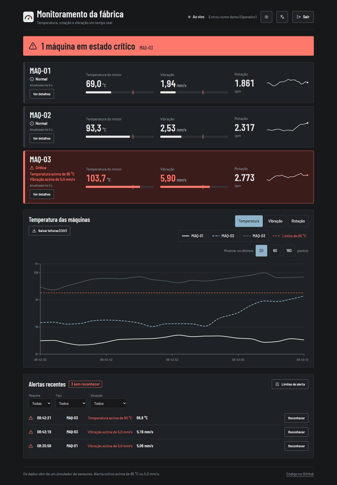
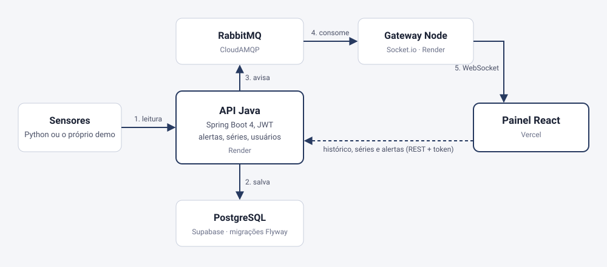
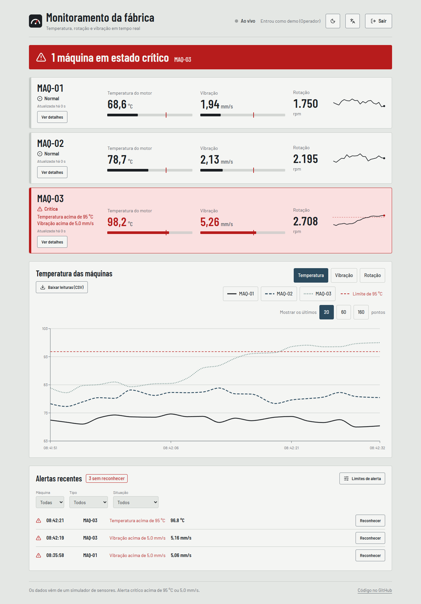
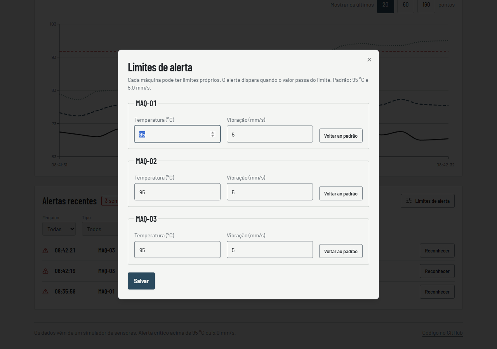
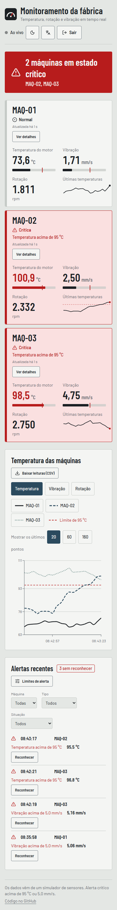

Industrial IoT Platform
Real-time machine telemetry: sensors send readings to a Java API, a queue notifies a Node gateway, and a React dashboard shows numbers, charts and alerts changing on their own. All live, at no cost.
Open the dashboard See the codeThe API runs on a free plan that sleeps without visits. On the first visit the dashboard can take up to 1 minute to wake up, and it says so on screen. After that it responds normally.

The problem
A factory has machines that heat up and vibrate, and the operator needs to know right away when one crosses its limit, not later. That means receiving many readings per second, keeping the history, updating the screen without it asking all the time, and recording who has seen each alert.
The solution
A platform made of separate pieces, each with one job: the Java API receives and stores the reading, evaluates alerts and serves the history; RabbitMQ carries the notice onward; the Node gateway delivers each reading to the browser over WebSocket; the React dashboard shows everything, with access roles and light and dark themes.
Architecture

The API saves first and notifies second. If the queue fails, the reading is still stored and the response is 200: real time is a bonus, not a condition for keeping the data. If the WebSocket does not arrive, the dashboard notices, shows "Updating by polling" and starts fetching new readings from the API every 3 seconds.
What the product does
Alerts stored on the server
An alert is created only at the moment a machine crosses its limit, not on every reading above it. Each machine has its own limit, and the operator marks an alert as seen.
Three access roles
Administrator, operator and read-only. The rule lives in the API (401 without login, 403 without permission); the dashboard only hides what the person cannot use.
History by period
1 hour, 6 hours or 24 hours, computed in the database into about 100 points per machine, with a comparison between machines.
Discord or Slack notice
Each new alert can become a message, sent in the background so it never delays a reading.
"Simulate failure"
A button in the demo triggers a failure on one machine so visitors can watch an alert appear, with a 30 s cooldown to prevent abuse.
Metrics and Grafana
Prometheus and Grafana start with one command and a ready-made dashboard: readings per machine, alerts and queue failures.
Screens



Decisions and what I learned
Each major decision has its own page in the repository, with what was discarded and what got worse: seven decision records (in Portuguese).
The demo that generated 1,700 alerts a day
The first simulator drew each reading from scratch, so temperature jumped around and crossed the limit all the time: more than 1,700 alerts in one day and a saw-tooth chart. I replaced it with a model that drifts slowly around the normal value, with occasional failures lasting a few tens of seconds, and made alerts fire only when the limit is crossed.
The test the test database could not see
The period series groups readings into minute buckets with an integer division inside the query. The in-memory test database accepted it; real PostgreSQL rejects the same expression with a parameter. So a group of tests runs on a real PostgreSQL (Testcontainers) in CI, and the migrations are proven there too, starting from an empty database and from an old one.
Measure before optimizing the hosting
On the free plan, the first visit waited more than two minutes (I measured 147 s and 169 s). I measured the Java startup and stored a class archive at docker build time, plus started with only the fast compiler: startup dropped to about 62 s. What code cannot fix is stated in the README: keeping the API always awake takes a paid plan.
The warning I almost missed
Reading the live site's log, I saw the API was still using the public development key for tokens, which would allow forging an administrator token. I replaced it with a random key on both services and confirmed that login and the WebSocket still work and that a forged token gets 401.
Quality in numbers
Counts taken from the code on 2026-10-17. The load test ran on GitHub Actions, with the API, database and queue on the same server and little data: it shows the code's performance, not the free hosted site's, which has far less CPU. Lighthouse measured on the local dashboard build: performance 99 to 100, accessibility 100, best practices 96, SEO 100.